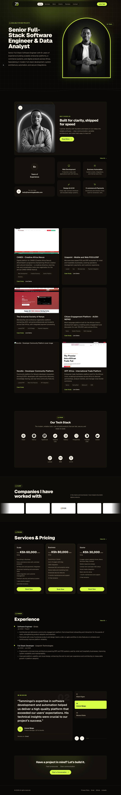

state-1: Initial page

Open screenshotstate-1: Initial page
-
aria-prohibited-attr1 critical WCAG Level A light color scheme-
Elements must only use permitted ARIA attributes11div[aria-label="5 out of 5 stars"]
How to fix
Review the mapped WCAG success criteria and fix the underlying accessibility requirement.- Address WCAG 4.1.2 Name, Role, Value.
-
-
layout-clipped-text4 warning WCAG Level AA light color scheme-
Text may be clipped at 320px.
- div:nth-of-type(2) > div:nth-of-type(2) > div:nth-of-type(2) > div:nth-of-type(1) > p:nth-of-type(2)
- div:nth-of-type(2) > div:nth-of-type(2) > div:nth-of-type(2) > div:nth-of-type(2) > p:nth-of-type(2)
- div:nth-of-type(2) > div:nth-of-type(2) > div:nth-of-type(2) > div:nth-of-type(3) > p:nth-of-type(2)
- div:nth-of-type(2) > div:nth-of-type(2) > div:nth-of-type(2) > div:nth-of-type(4) > p:nth-of-type(2)
How to fix
Prevent meaningful text from being clipped when the page reflows to a narrow viewport.- Remove fixed heights and hidden overflow from text containers unless the complete text remains available through an accessible control.
- Allow text to wrap and containers to grow after zoom, localization, and user font changes.
- Confirm manually that the flagged text is meaningful and unavailable, because intentional visual truncation can be acceptable when the full name remains accessible.
-
-
image-alt-generic1 warning best practice WCAG Level A light color scheme-
Alternative text is too generic to communicate the image purpose. Current alt: "logo"2img[alt="logo"]
How to fix
Replace generic alternative text with a concise description of the image purpose.- Avoid alternatives that only say image, photo, icon, graphic, or logo.
- Name the subject, information, brand, or action that matters in the current context.
- Use an empty alternative only when the image is decorative.
-
-
control-name-inconsistent3 warning needs review WCAG Level AA-
Potential inconsistent accessible name for the same-purpose link.
- h3 > a:nth-of-type(1)
- div > a:nth-of-type(1)
- li > a:nth-of-type(1)
How to fix
Use consistent accessible names for controls that perform the same function.- Review the listed controls and confirm whether they have the same purpose.
- If they do, align the visible text, aria-label, aria-labelledby, or shared component label across pages.
- If the controls intentionally differ, document that decision during manual review instead of treating it as an automatic failure.
-
-
resize-text-200-risk1 warning needs review WCAG Level AA light color scheme-
Review 200% resize-text behavior: 4 clipped text candidates.html
How to fix
Review whether content remains readable and operable when text or page zoom reaches 200%.- Avoid fixed-height text containers, fixed-width cards, and clipped controls that break when text size increases.
- Let text wrap, increase available line height, and allow containers to grow without hiding labels, errors, or actions.
- Confirm manually at 200% browser zoom or equivalent text-size settings because automated checks can only flag layout risk signals.
-
-
text-spacing-resilience-risk1 warning needs review WCAG Level AA light color scheme-
Review text-spacing resilience: 4 clipped text candidates.html
How to fix
Review the mapped WCAG success criteria and fix the underlying accessibility requirement.- Address WCAG 1.4.12 Text Spacing.
-
-
color-contrast11 warning needs review WCAG Level AA light color scheme-
Color contrast needs manual review.
- 9.-right-3
- 1.items-start.gap-6.flex-col > div:nth-child(1) > .section-kicker
- 10.leading-8
- 7.py-1\.5.transition-colors[href$="contact"]
- .relative > .sm\:text-3xl.text-2xl.font-extrabold
- 12.right-6
- 5a[href$="/#clients"]
- 4a[href$="/#projects"]
- 3a[href$="/#services"]
- 6a[href$="/#testimonials"]
- 8h1
How to fix
Increase foreground/background contrast until the text meets the required WCAG ratio.- Use a darker foreground color or lighter background color for normal text.
- Keep contrast at least 4.5:1 for normal text and 3:1 for large text.
-
Reflow and zoom evidence (320 CSS px 400% simulation)
Zoom comparison
- 200% (640 CSS px): 0px overflow, 4 clipped text candidates, 0 fixed/sticky overlap candidates
- 400% (320 CSS px): 0px overflow, 4 clipped text candidates, 0 fixed/sticky overlap candidates
div:nth-of-type(2) > div:nth-of-type(2) > div:nth-of-type(2) > div:nth-of-type(1) > p:nth-of-type(2): Production-ready web applications built with Next.js, React, Vue.js, and Laravel — scaling from lean MVPs to enterprise- (0px horizontal, 60px vertical overflow)div:nth-of-type(2) > div:nth-of-type(2) > div:nth-of-type(2) > div:nth-of-type(2) > p:nth-of-type(2): Custom scripts, integrations, and internal tools that eliminate repetitive manual work and streamline business processes (0px horizontal, 40px vertical overflow)div:nth-of-type(2) > div:nth-of-type(2) > div:nth-of-type(2) > div:nth-of-type(3) > p:nth-of-type(2): Clean, high-contrast interfaces and reusable design systems built in Figma that make products feel intentional and easy (0px horizontal, 40px vertical overflow)div:nth-of-type(2) > div:nth-of-type(2) > div:nth-of-type(2) > div:nth-of-type(4) > p:nth-of-type(2): Storefronts and checkout flows built for conversion, with secure payment integrations for local and global markets. (0px horizontal, 40px vertical overflow)
No fixed or sticky overlap candidates were detected by the bounded heuristic.
Review flagged content manually at 400% zoom. Intentional truncation or sticky overlap is not automatically a WCAG failure when the complete information remains available and controls remain operable.
Text spacing evidence
div:nth-of-type(2) > div:nth-of-type(2) > div:nth-of-type(2) > div:nth-of-type(1) > p:nth-of-type(2): Production-ready web applications built with Next.js, React, Vue.js, and Laravel — scaling from lean MVPs to enterprise- (0px horizontal, 105px vertical overflow)div:nth-of-type(2) > div:nth-of-type(2) > div:nth-of-type(2) > div:nth-of-type(2) > p:nth-of-type(2): Custom scripts, integrations, and internal tools that eliminate repetitive manual work and streamline business processes (0px horizontal, 105px vertical overflow)div:nth-of-type(2) > div:nth-of-type(2) > div:nth-of-type(2) > div:nth-of-type(3) > p:nth-of-type(2): Clean, high-contrast interfaces and reusable design systems built in Figma that make products feel intentional and easy (3px horizontal, 84px vertical overflow)div:nth-of-type(2) > div:nth-of-type(2) > div:nth-of-type(2) > div:nth-of-type(4) > p:nth-of-type(2): Storefronts and checkout flows built for conversion, with secure payment integrations for local and global markets. (0px horizontal, 84px vertical overflow)
Confirm manually with user text-spacing settings or a browser stylesheet. The heuristic applies line-height, letter-spacing, word-spacing, and paragraph spacing overrides, then checks for clipped or horizontally overflowing content.
Image alternative-text evidence
| Image | Current alternative | Review reasons |
|---|---|---|
img[alt="logo"] | logo | generic |
These are medium-confidence review signals. Only a person can decide whether an image is informative, decorative, or accurately described in context.
Media and motion evidence
No rendered audio or video elements were observed.
Reduced-motion CSS query detected: no. Unreadable cross-origin stylesheets: 0. Caption, transcript, audio-description, motion, and flashing quality require human review.